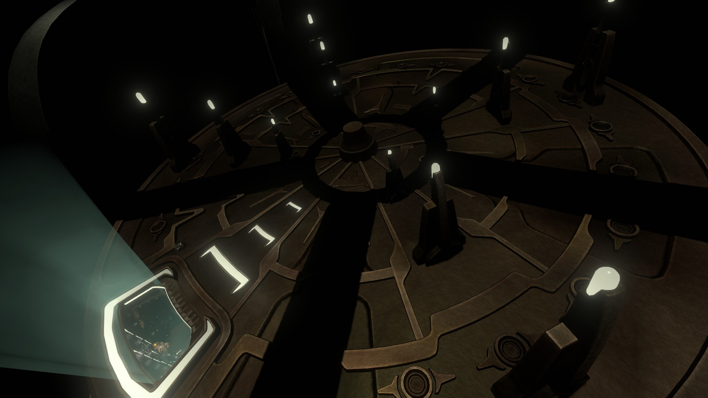
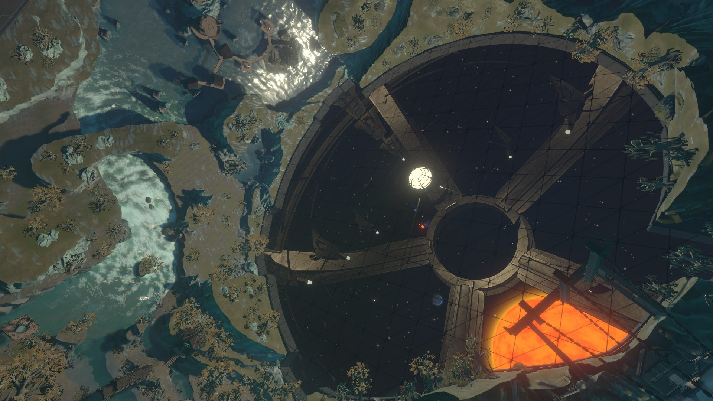
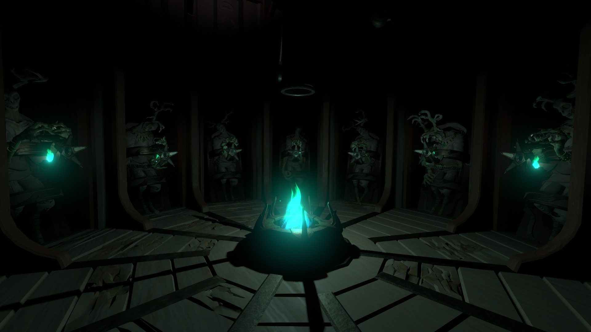
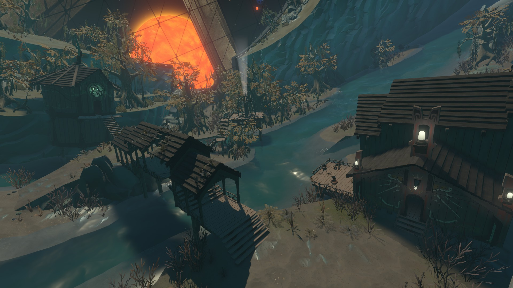
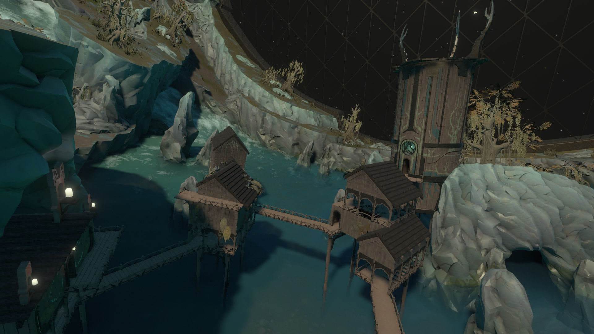
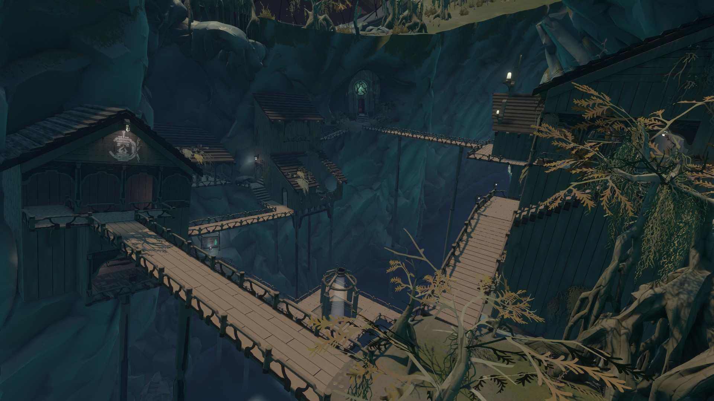
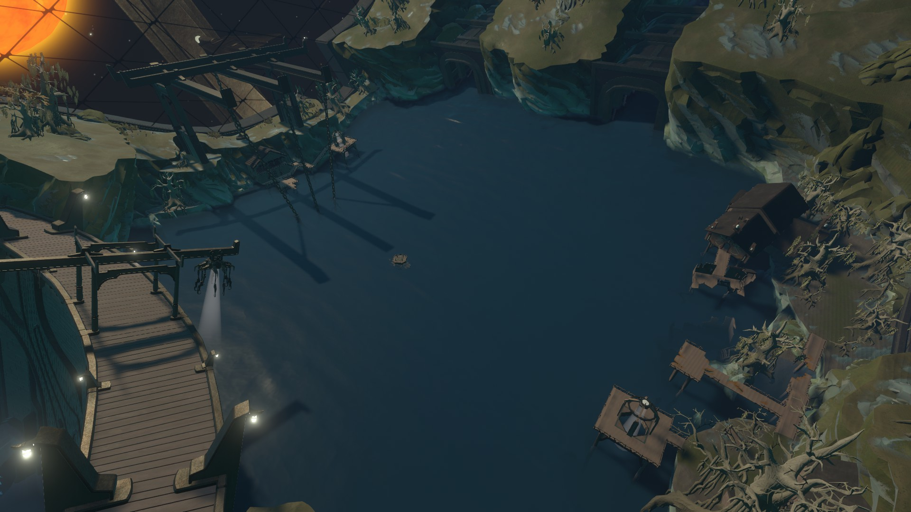

THE STRANGER
The Stranger is a massive ring world hidden within some sort of cloaking field. It does not appear to be Hearthian or Nomaian in origin. The interior of the Stranger is made up of four locations connected by a river that flows through a reservoir. Unlike Nomai ruins, many of the buildings are still intact.


THINGS OF NOTE
Unlike the Nomai, the inhabitants of the Stranger communicate almost primarily through images. Rather than written text, which they rarely use, they use special staffs that can project a slideshow of images in the mind of another as well as film reels that they use to document important information or their history. Many theaters can be found around the Stranger where the player can play slide reels that they've found. (include pictures of staff and slide reel)
At some point during the loop, the lights inside the Stranger will flicker and four green panels will open. The Stranger will begin to move far away from the solar system, but this movement causes cracks to form in the reservoir's dam. The dam will eventually break, causing a massive wave to crash through and destroy many of the builidngs inside the Stranger.
There are three towers around the Stranger with several murals on the walls of the interior. Some of these murals will have small lanterns resting on them. If lanterns are removed from murals that have a blue ringed planet, a secret passage will open. Inside the secret passage is a room where many antlered skeletons holding an unknown device are sat around a green-flame campfire.

Sit by the fire?
PLACES OF INTEREST
River Lowlands

The River Lowlands is a low-lying region located near the entrance of the Stranger. There are a few wooden buildings along the banks of the river. One of these buildings is a workshop surrounded by ghost matter. Several ornate metal artifacts can be found inside of it. There is also a mural tower connected via bridge to a theater house. Two slide reels can be found inside the theater.
Cinder Isles

The Cinder Isles is a pair of small rocky islands connected by a village of stilt houses located in the middle of the Stranger. A burned-out house can be found containing a metal symbol for the Eye of the Universe. A mural tower can also be found here, as well as a theater house tucked in a cliffside housing two slide reels.
Hidden Gorge

The Hidden Gorge is a narrow gorge along the rightmost branch of the river in the middle of the Stranger. There are dwellings built into both cliff faces high above. A mural tower and a theater house can be found here. The theater house contains an artifact as well as two slide reels. An abandoned temple can be accessed from a passage. Inside the temple, there is an interface upstairs that can be used to line up three symbols in a vertical sequence. Entering the correct sequence opens a path to a secret room beneath the temple containing a slide reel.
Reservoir

The Reservoir is an enormous reservoir with wooden piers and buildings on both shores. Along the dam is an entrance to a building located inside the cliffside. Inside the building is an elevator leading back to the entrance of the Stranger, a viewing space where the sun can be seen through a large window, and a basement area where a table displays the Stranger's current trajectory and the sun's predicted supernova radius.